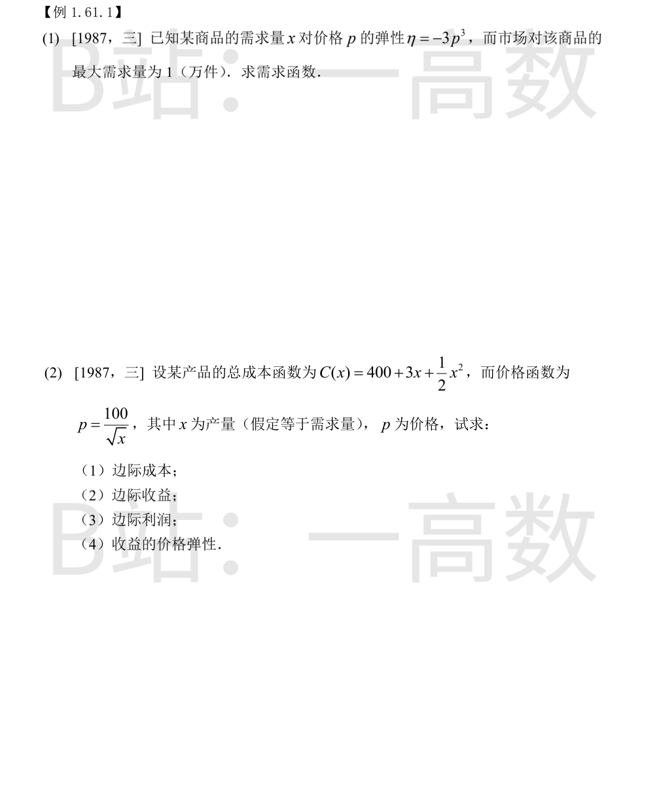
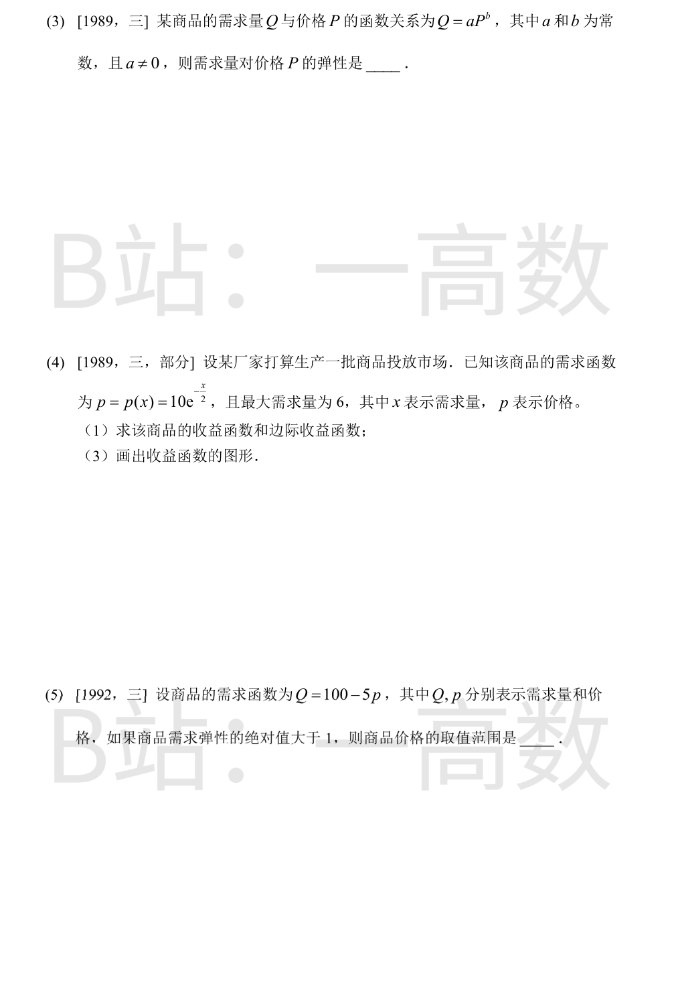
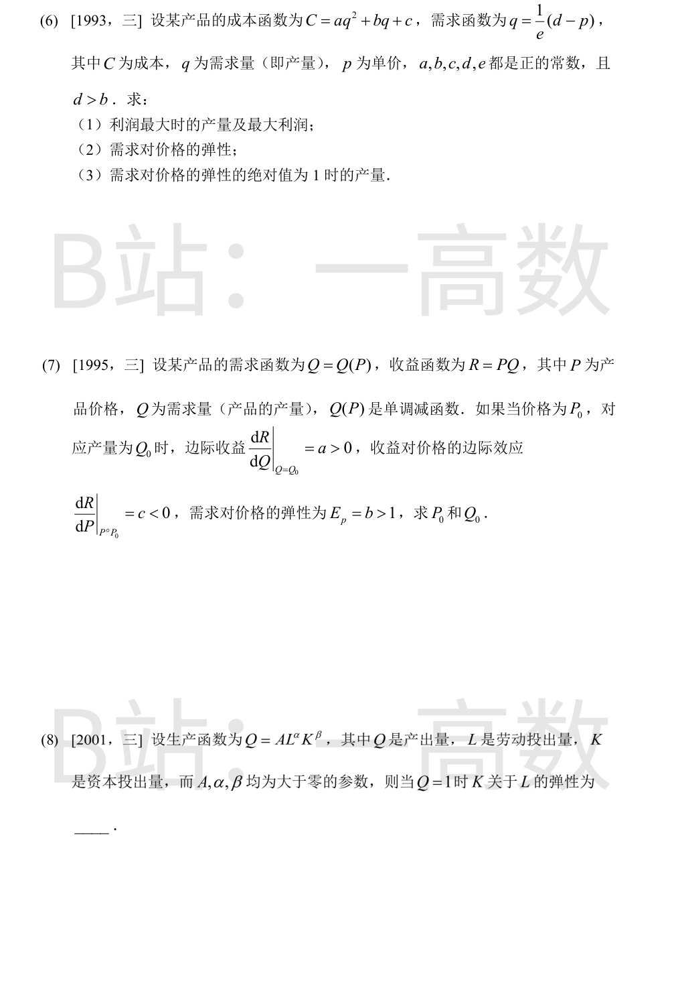
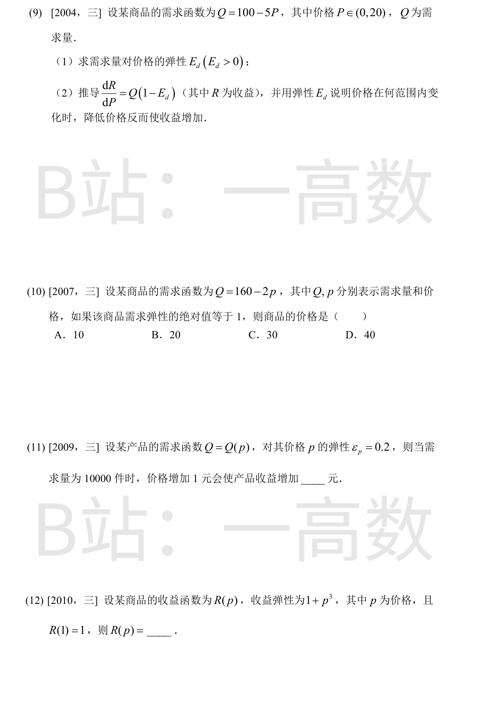
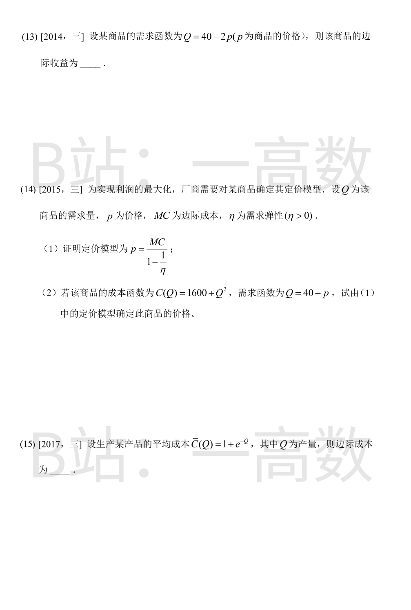
由弹性定义
$$\eta=\frac{dx}{dp}\cdot\frac{p}{x}=-3p^3 \Rightarrow \frac{dx}{x}=-3p^2\,dp.$$
两边积分：\ln x=-p^3+C_1，即 x=Ce^{-p^3}。
最大需求量在 p=0 处取得：x(0)=C=1。
故需求函数为 x=e^{-p^3}。
(1) 边际成本：MC=C'(x)=3+x。
(2) 收益 R(x)=px=\dfrac{100}{\sqrt{x}}\cdot x=100\sqrt{x}，边际收益
$$MR=R'(x)=\frac{50}{\sqrt{x}}.$$
(3) 利润 L(x)=R-C=100\sqrt{x}-400-3x-\frac{x^2}{2}，边际利润
$$ML=L'(x)=\frac{50}{\sqrt{x}}-3-x.$$
(4) 由 p=\dfrac{100}{\sqrt{x}} 得 x=\dfrac{10000}{p^2}，故 R(p)=px=\dfrac{10000}{p}，
$$E_R=\frac{dR}{dp}\cdot\frac{p}{R}=-\frac{10000}{p^2}\cdot\frac{p^2}{10000}=-1,$$
即收益的价格弹性恒为 -1（单位弹性）。
$$\eta=\frac{dQ}{dP}\cdot\frac{P}{Q}=abP^{b-1}\cdot\frac{P}{aP^b}=b.$$
即幂函数形式的需求函数，其弹性为常数，等于指数 b。
(1) 收益函数
$$R(x)=x\,p(x)=10xe^{-x/2},\quad x\in[0,6].$$
边际收益
$$MR=R'(x)=10e^{-x/2}+10x\left(-\frac12\right)e^{-x/2}=10e^{-x/2}\left(1-\frac{x}{2}\right)=5(2-x)e^{-x/2}.$$
(3) 图形要点：
- R(0)=0，过原点；
- R'(x)=0 得唯一驻点 x=2，x<2 时增、x>2 时减，最大值 R(2)=\dfrac{20}{e}\approx 7.36；
- R''(x)=\dfrac{5}{2}(x-4)e^{-x/2}，x=4 处拐点 (4,\ 40e^{-2})，x<4 上凸、x>4 下凸；
- 端点 R(6)=60e^{-3}\approx 2.99，x\to\infty 时 R\to 0。
曲线自原点先升后降：升至 (2, 20/e) 后单调下降，先上凸后下凸地趋近 x 轴。
$$\eta=\frac{dQ}{dp}\cdot\frac{p}{Q}=\frac{-5p}{100-5p}=-\frac{p}{20-p}.$$
由 |\eta|>1：
$$\frac{p}{20-p}>1 \Rightarrow p>20-p \Rightarrow p>10.$$
又需求量为正要求 Q=100-5p>0，即 p<20。
故 10<p<20。
由需求函数反解 p=d-eq，收益 R=q(d-eq)。
(1) 利润
$$L(q)=R-C=(d-b)q-(a+e)q^2-c.$$
$$L'(q)=(d-b)-2(a+e)q=0 \Rightarrow q^*=\frac{d-b}{2(a+e)},$$
L''(q)=-2(a+e)<0，为最大值点。
$$L(q^*)=\frac{(d-b)^2}{2(a+e)}-\frac{(d-b)^2}{4(a+e)}-c=\frac{(d-b)^2}{4(a+e)}-c.$$
(2) $\dfrac{dq}{dp}=-\dfrac1e$，故
$$\eta=\frac{dq}{dp}\cdot\frac{p}{q}=-\frac{1}{e}\cdot\frac{p}{(d-p)/e}=-\frac{p}{d-p}\quad\left(|\eta|=\frac{p}{d-p}\right).$$
(3) |\eta|=1 即 \dfrac{p}{d-p}=1，得 p=\dfrac{d}{2}，此时
$$q=\frac{1}{e}\left(d-\frac{d}{2}\right)=\frac{d}{2e}.$$
由 E_p=-\dfrac{dQ}{dP}\cdot\dfrac{P}{Q}=b 得 \dfrac{dQ}{dP}=-\dfrac{bQ}{P}，从而 \dfrac{dP}{dQ}=-\dfrac{P}{bQ}。
对 Q 求边际收益：
$$\frac{dR}{dQ}=P+Q\frac{dP}{dQ}=P-\frac{P}{b}=P\left(1-\frac1b\right)=a \Rightarrow P_0=\frac{ab}{b-1}.$$
对 P 求边际收益：
$$\frac{dR}{dP}=Q+P\frac{dQ}{dP}=Q-bQ=Q(1-b)=c \Rightarrow Q_0=\frac{c}{1-b}.$$
（c<0，1-b<0，故 Q_0>0，符合实际。）
Q=1 即 AL^{\alpha}K^{\beta}=1。取对数：
$$\alpha\ln L+\beta\ln K=\ln\frac1A.$$
两边对 L 求导：
$$\alpha+\beta\cdot\frac{1}{K}\frac{dK}{dL}=0 \Rightarrow \frac{L}{K}\frac{dK}{dL}=-\frac{\alpha}{\beta}.$$
左端即 K 对 L 的弹性，故弹性为 -\dfrac{\alpha}{\beta}。
(1) $\dfrac{dQ}{dP}=-5$，
$$E_d=-\frac{dQ}{dP}\cdot\frac{P}{Q}=\frac{5P}{100-5P}=\frac{P}{20-P}.$$
(2) 收益 R=PQ，其中 Q=Q(P)：
$$\frac{dR}{dP}=Q+P\frac{dQ}{dP}=Q+P\cdot\left(-E_d\frac{Q}{P}\right)=Q(1-E_d).$$
降价（P 减小）反而使收益增加，即 R 关于 P 递减：\dfrac{dR}{dP}<0 \Leftrightarrow E_d>1：
$$\frac{P}{20-P}>1 \Rightarrow P>10,$$
结合 P\in(0,20)，故当 10<P<20 时，降低价格使收益增加。
$$|\eta|=\left|\frac{dQ}{dp}\cdot\frac{p}{Q}\right|=\frac{2p}{160-2p}=1$$
解得 2p=160-2p，p=40。选 D。
收益 R=pQ(p)，
$$\frac{dR}{dp}=Q+p\frac{dQ}{dp}.$$
由弹性（取正值）\varepsilon_p=-\dfrac{dQ}{dp}\cdot\dfrac{p}{Q}=0.2 得 p\dfrac{dQ}{dp}=-0.2Q，故
$$\frac{dR}{dp}=Q-0.2Q=0.8Q.$$
当 Q=10000 时，价格增加 1 元收益增加约 0.8\times 10000=8000 元。
由收益弹性定义
$$\frac{p}{R}\cdot\frac{dR}{dp}=1+p^3 \Rightarrow \frac{dR}{R}=\left(\frac1p+p^2\right)dp.$$
积分：
$$\ln R=\ln p+\frac{p^3}{3}+C.$$
代入 R(1)=1：0=0+\dfrac13+C，得 C=-\dfrac13。
故
$$R(p)=p\,e^{\frac{p^3-1}{3}}.$$
由 Q=40-2p 反解 p=20-\dfrac{Q}{2}，收益
$$R(Q)=pQ=20Q-\frac{Q^2}{2},$$
边际收益
$$MR=\frac{dR}{dQ}=20-Q.$$
(1) 利润 L(Q)=pQ-C(Q)。利润最大（最优定价）要求
$$\frac{dL}{dQ}=p+Q\frac{dp}{dQ}-MC=0.$$
由弹性定义 \eta=-\dfrac{dQ}{dp}\cdot\dfrac{p}{Q}，得 \dfrac{dp}{dQ}=-\dfrac{p}{\eta Q}，代入：
$$p-\frac{p}{\eta}-MC=0 \Rightarrow p\left(1-\frac1\eta\right)=MC \Rightarrow p=\frac{MC}{1-\frac1\eta}.\ \blacksquare$$
(2) MC=2Q；由 Q=40-p 得 \dfrac{dQ}{dp}=-1，故
$$\eta=-(-1)\cdot\frac{p}{Q}=\frac{p}{Q}.$$
代入定价模型：
$$p=\frac{2Q}{1-\frac{Q}{p}} \Rightarrow p-Q=2Q \Rightarrow p=3Q.$$
结合需求函数 Q=40-p：Q=40-3Q，得 Q=10，p=30。
故该商品定价为 30。
总成本
$$C(Q)=Q\cdot\bar{C}(Q)=Q+Qe^{-Q},$$
边际成本
$$MC=C'(Q)=1+e^{-Q}-Qe^{-Q}=1+(1-Q)e^{-Q}.$$
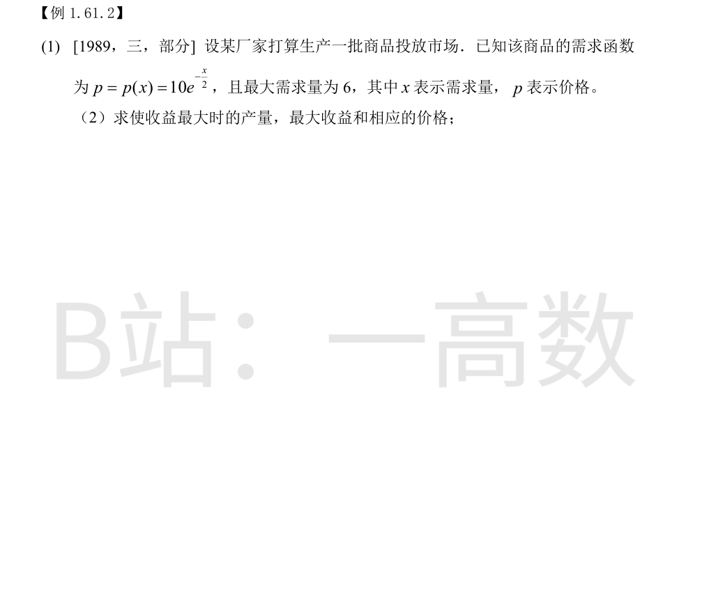
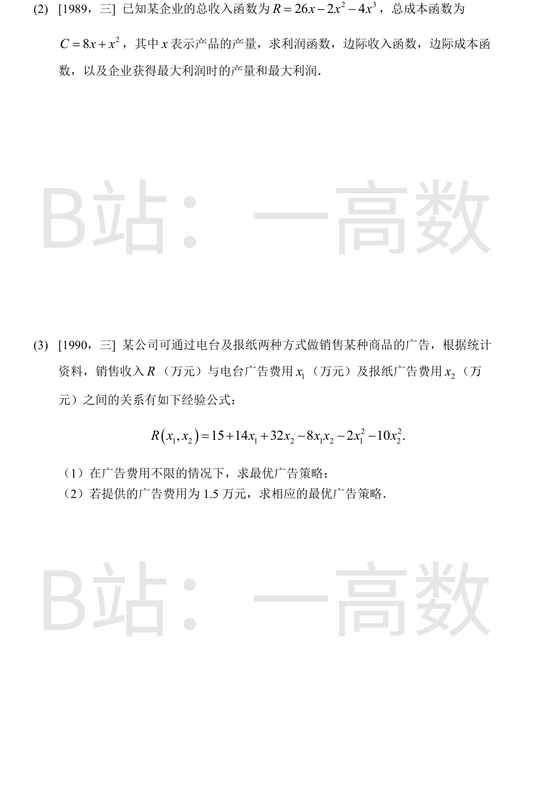
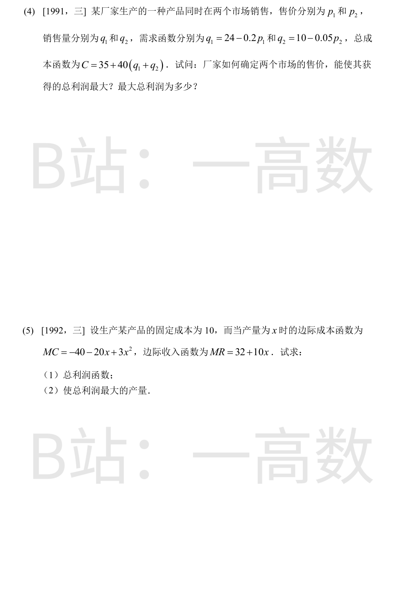
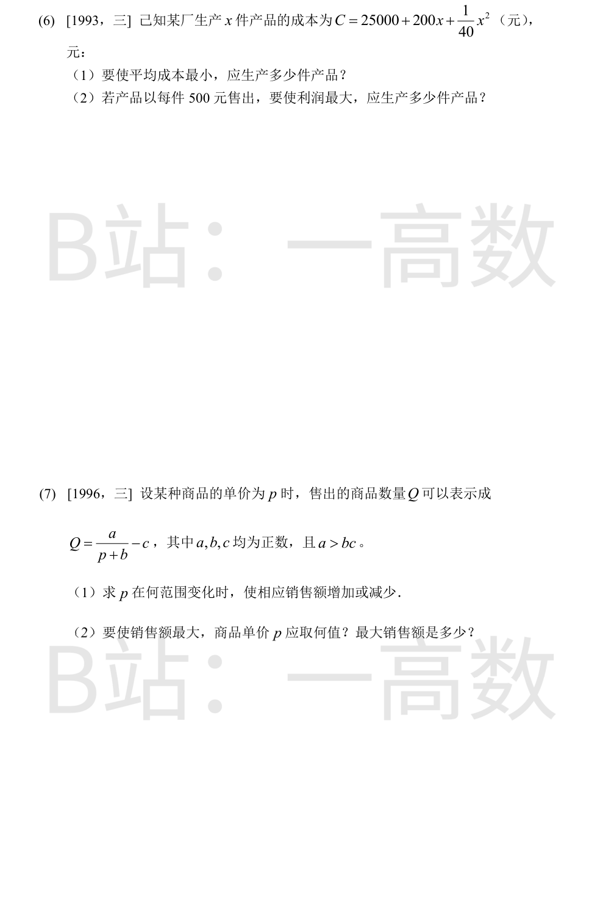
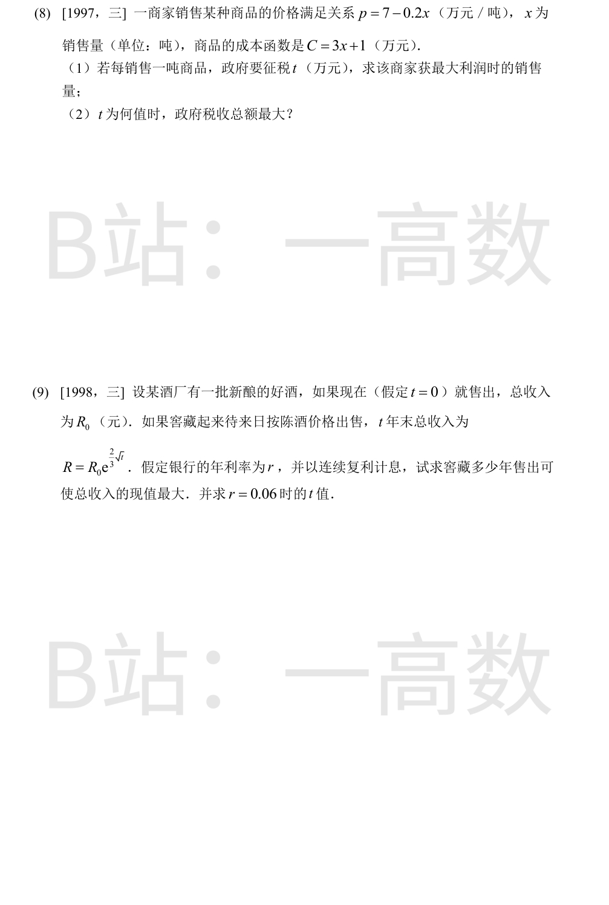
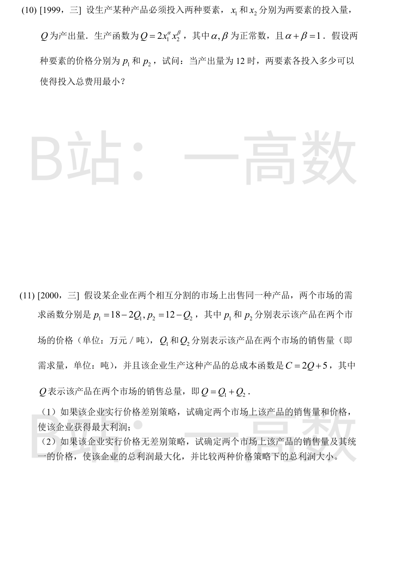
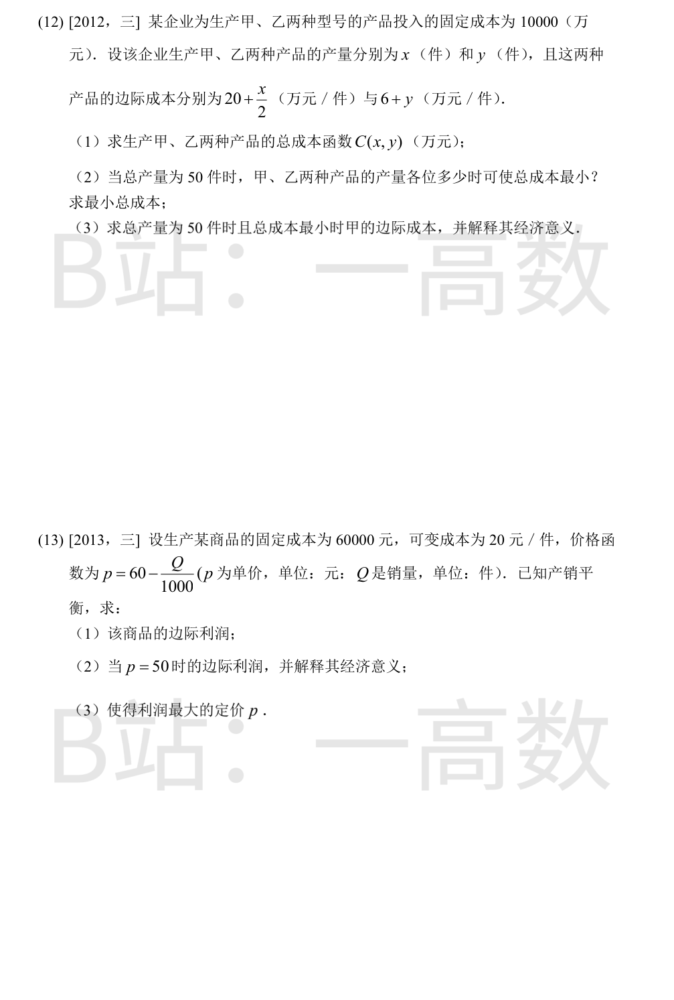
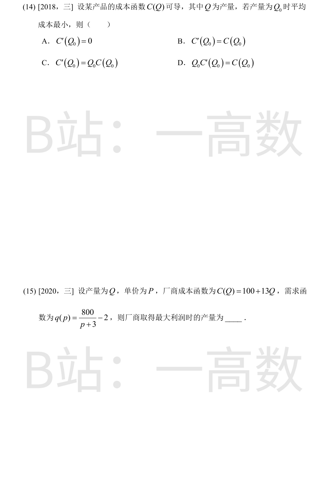
收益函数 R(x)=10xe^{-x/2}，
$$R'(x)=5(2-x)e^{-x/2},$$
唯一驻点 x=2（x<2 增、x>2 减），且 R''(2)=-5e^{-1}<0，为最大值点。
最大收益 R(2)=20e^{-1}=\dfrac{20}{e}，相应价格 p=10e^{-1}=\dfrac{10}{e}。
利润函数
$$L(x)=R-C=(26x-2x^2-4x^3)-(8x+x^2)=18x-3x^2-4x^3.$$
边际收入：MR=R'(x)=26-4x-12x^2；边际成本：MC=C'(x)=8+2x。
求最大利润：
$$L'(x)=18-6x-12x^2=0 \Rightarrow 2x^2+x-3=0 \Rightarrow x=1\ (x=-\tfrac32\ \text{舍去}),$$
L''(x)=-6-24x<0（x>0），故 x=1 为最大值点。
最大利润 L(1)=18-3-4=11。
(1) 广告费不限时，以扣除广告费后的净收益为目标：\pi=R-(x_1+x_2)。令
$$\frac{\partial\pi}{\partial x_1}=13-4x_1-8x_2=0,\qquad \frac{\partial\pi}{\partial x_2}=31-8x_1-20x_2=0.$$
解得 x_1=\dfrac34=0.75，x_2=\dfrac54=1.25。
判别：A=\pi_{11}=-4，B=\pi_{12}=-8，C=\pi_{22}=-20，AC-B^2=16>0 且 A<0，故为极大值即最大值。
最优策略：电台广告费 0.75 万元，报纸广告费 1.25 万元。
(2) 约束 x_1+x_2=1.5，代入 x_2=1.5-x_1：
$$R=15+14x_1+32(1.5-x_1)-8x_1(1.5-x_1)-2x_1^2-10(1.5-x_1)^2=40.5-4x_1^2,$$
在 [0,1.5] 上当 x_1=0 时最大，R=40.5。
最优策略：x_1=0，x_2=1.5，即 1.5 万元全部投放报纸广告，销售收入最大为 40.5 万元。
【仲裁修正】独立校验发现分歧，经仲裁重解，以本答案为准：A 把(1)做成销售收入最大化：对 R 求驻点得 (1.5,1)（净收益仅39，非最大）；净收益 L=R-x_1-x_2 的驻点为 (0.75,1.25)，L=39.25 才是最优广告策略
总利润
$$L=p_1q_1+p_2q_2-C=p_1(24-0.2p_1)+p_2(10-0.05p_2)-35-40(34-0.2p_1-0.05p_2)$$
$$=32p_1-0.2p_1^2+12p_2-0.05p_2^2-1395.$$
一阶条件：
$$\frac{\partial L}{\partial p_1}=32-0.4p_1=0 \Rightarrow p_1=80,\qquad \frac{\partial L}{\partial p_2}=12-0.1p_2=0 \Rightarrow p_2=120.$$
由 \partial^2 L 为负定（对角负元），知为最大值。
此时 q_1=8，q_2=4，R=80\times8+120\times4=1120，C=35+40\times12=515，
$$L_{\max}=1120-515=605.$$
即两市场售价分别定为 80 与 120 时总利润最大，为 605。
(1) 成本（C(0)=10 为固定成本）：
$$C(x)=\int_0^x(-40-20t+3t^2)\,dt+10=x^3-10x^2-40x+10,$$
收益（R(0)=0）：
$$R(x)=\int_0^x(32+10t)\,dt=32x+5x^2.$$
总利润
$$L(x)=R-C=-x^3+15x^2+72x-10.$$
(2) $$L'(x)=-3x^2+30x+72=0 \Rightarrow x^2-10x-24=0 \Rightarrow x=12\ (x=-2\ \text{舍去}),$$
L''(12)=-42<0，故产量 x=12 时总利润最大。
(1) 平均成本
$$\bar{C}(x)=\frac{25000}{x}+200+\frac{x}{40},$$
$$\bar{C}'(x)=-\frac{25000}{x^2}+\frac{1}{40}=0 \Rightarrow x^2=10^6 \Rightarrow x=1000.$$
（x>0，且 x=1000 处 \bar C 取最小。）故生产 1000 件时平均成本最小。
(2) 利润
$$L(x)=500x-C=300x-25000-\frac{x^2}{40},$$
$$L'(x)=300-\frac{x}{20}=0 \Rightarrow x=6000,$$
L''(x)=-\dfrac{1}{40}<0。故生产 6000 件时利润最大。
由 Q\ge0 得 0\le p\le \dfrac{a}{c}-b（因 a>bc 保证区间非空）。
销售额
$$R=pQ=\frac{ap}{p+b}-cp,\qquad R'(p)=\frac{ab}{(p+b)^2}-c.$$
(1) R'>0 \Leftrightarrow (p+b)^2<\dfrac{ab}{c} \Leftrightarrow p<\sqrt{\dfrac{ab}{c}}-b（取正根）。由 a>bc 可得 a/c>\sqrt{ab/c}，故该临界值落在定义域内部。
即：0\le p<\sqrt{\dfrac{ab}{c}}-b 时销售额随 p 增加而增加；\sqrt{\dfrac{ab}{c}}-b<p\le\dfrac{a}{c}-b 时销售额减少。
(2) 唯一驻点 p^*=\sqrt{\dfrac{ab}{c}}-b 由增转减，为最大值点。此时 p^*+b=\sqrt{\dfrac{ab}{c}}：
$$\frac{ap^*}{p^*+b}=a-\frac{ab}{\sqrt{ab/c}}=a-\sqrt{abc},\qquad cp^*=\sqrt{abc}-bc,$$
$$R_{\max}=R(p^*)=a-\sqrt{abc}-\left(\sqrt{abc}-bc\right)=a+bc-2\sqrt{abc}.$$
(1) 税后利润
$$L(x)=(7-0.2x)x-(3x+1)-tx=(4-t)x-0.2x^2-1.$$
$$L'(x)=(4-t)-0.4x=0 \Rightarrow x=\frac{4-t}{0.4}=\frac{5}{2}(4-t),$$
L''<0，故销售量为 \dfrac{5}{2}(4-t) 吨时商家利润最大（t<4）。
(2) 政府税收总额
$$T=t\cdot x=t\cdot\frac{5}{2}(4-t)=10t-\frac{5}{2}t^2,$$
$$T'(t)=10-5t=0 \Rightarrow t=2,\quad T''=-5<0.$$
故 t=2（万元/吨）时税收总额最大，T(2)=10（万元）。
按连续复利贴现，t 年末收入 R 的现值
$$A(t)=Re^{-rt}=R_0\,e^{\frac{2}{5}\sqrt{t}-rt}.$$
只需最大化指数函数 f(t)=\dfrac{2}{5}\sqrt{t}-rt（t>0）：
$$f'(t)=\frac{1}{5\sqrt{t}}-r=0 \Rightarrow \sqrt{t}=\frac{1}{5r} \Rightarrow t=\frac{1}{25r^2},$$
f''(t)=-\dfrac{1}{10}t^{-3/2}<0，故为最大值点。
r=0.06 时：
$$t=\frac{1}{25\times 0.06^2}=\frac{1}{0.09}=\frac{100}{9}\approx 11.1\ (\text{年}).$$
【仲裁修正】独立校验发现分歧，经仲裁重解，以本答案为准：现值函数 R_0e^{2\sqrt{t}/5-rt} 求导应为 \frac{1}{5\sqrt{t}}=r，得 t=1/(25r^2)；A、B 求导系数处理错误得 1/(9r^2)、30.9 年
约束 2x_1^{\alpha}x_2^{\beta}=12 即 x_1^{\alpha}x_2^{\beta}=6。作拉格朗日函数
$$F=p_1x_1+p_2x_2+\lambda\left(6-x_1^{\alpha}x_2^{\beta}\right).$$
$$\frac{\partial F}{\partial x_1}=p_1-\lambda\alpha x_1^{\alpha-1}x_2^{\beta}=0,\qquad \frac{\partial F}{\partial x_2}=p_2-\lambda\beta x_1^{\alpha}x_2^{\beta-1}=0.$$
两式消 \lambda：p_1x_1/\alpha=p_2x_2/\beta，得
$$x_2=\frac{\beta p_1}{\alpha p_2}\,x_1.$$
代入约束：x_1^{\alpha}\left(\dfrac{\beta p_1}{\alpha p_2}\right)^{\beta}x_1^{\beta}=6，由 \alpha+\beta=1 得
$$x_1=6\left(\frac{\alpha p_2}{\beta p_1}\right)^{\beta},\qquad x_2=6\left(\frac{\beta p_1}{\alpha p_2}\right)^{\alpha}.$$
（代入验证：2x_1^{\alpha}x_2^{\beta}=2\times6=12 ✓。该极小点即总费用最小的投入方案。）
(1) 利润
$$L=(18-2Q_1)Q_1+(12-Q_2)Q_2-2(Q_1+Q_2)-5=16Q_1-2Q_1^2+10Q_2-Q_2^2-5.$$
$$\frac{\partial L}{\partial Q_1}=16-4Q_1=0 \Rightarrow Q_1=4,\quad \frac{\partial L}{\partial Q_2}=10-2Q_2=0 \Rightarrow Q_2=5.$$
相应 p_1=18-8=10，p_2=12-5=7，利润 L=64-32+50-25-5=52（万元）。
(2) p_1=p_2=p：Q_1=\dfrac{18-p}{2}，Q_2=12-p，总销量 Q=21-\dfrac32p，即 p=14-\dfrac23Q。
$$L=pQ-2Q-5=12Q-\frac{2}{3}Q^2-5,\qquad L'(Q)=12-\frac{4}{3}Q=0 \Rightarrow Q=9.$$
此时统一价 p=14-6=8，Q_1=5，Q_2=4，利润 L=108-54-5=49（万元）。
比较：52>49，实行价格差别策略比无差别策略多得利润 3 万元。
【仲裁修正】独立校验发现分歧，经仲裁重解，以本答案为准：A 的(2)取 p=7 非最优：统一价利润 \pi(p)=24p-1.5p^2-47 在 p=8 处最大（\pi=49），而 \pi(7)=47.5
(1) $$C(x,y)=10000+\int_0^x\left(20+\frac{s}{2}\right)ds+\int_0^y(6+t)\,dt=10000+20x+\frac{x^2}{4}+6y+\frac{y^2}{2}.$$
(2) 约束 x+y=50，代入 y=50-x：
$$C=10000+20x+\frac{x^2}{4}+300-6x+\frac{(50-x)^2}{2}=11550-36x+\frac{3}{4}x^2,$$
$$\frac{dC}{dx}=-36+\frac{3}{2}x=0 \Rightarrow x=24,\quad y=26,$$
d²C/dx²>0，为最小值。最小总成本 C=11550-864+432=11118（万元）。
(3) 甲的边际成本为 20+\dfrac{24}{2}=32（万元/件）。
经济意义：在总产量为 50 件且总成本最小时，甲的产量再增加 1 件，总成本大约增加 32 万元。
成本 C=60000+20Q，收益 R=pQ=60Q-\dfrac{Q^2}{1000}，利润
$$L(Q)=40Q-\frac{Q^2}{1000}-60000.$$
(1) 边际利润
$$L'(Q)=40-\frac{Q}{500}.$$
(2) p=50 时由需求函数 Q=1000(60-50)=10000（产销平衡），
$$L'(10000)=40-20=20\ (\text{元}).$$
经济意义：当价格为 50 元时，销量再增加 1 件，利润大约增加 20 元。
(3) 令 L'(Q)=0 得 Q=20000，L''=-\dfrac{1}{500}<0，利润最大。此时定价
$$p=60-\frac{20000}{1000}=40\ (\text{元}).$$
平均成本 \bar C(Q)=\dfrac{C(Q)}{Q}，在 Q₀ 处取得最小值则
$$\bar C'(Q_0)=\frac{Q_0C'(Q_0)-C(Q_0)}{Q_0^2}=0 \Rightarrow Q_0C'(Q_0)=C(Q_0),$$
即边际成本等于平均成本。选 D。
利润（以价格 p 为自变量）
$$L(p)=p\,q-C(q)=(p-13)\left(\frac{800}{p+3}-2\right)-100.$$
$$\frac{dL}{dp}=\frac{800}{p+3}-2-\frac{800(p-13)}{(p+3)^2}=\frac{-2p^2-12p+12782}{(p+3)^2}.$$
令分子为零：p^2+6p-6391=0，即 (p+3)^2=6400，取正根 p=77。
此时产量
$$q=\frac{800}{80}-2=8.$$
（p>77 时 dL/dp<0，p<77 时 dL/dp>0，确为最大值。）故最大利润时的产量为 8。
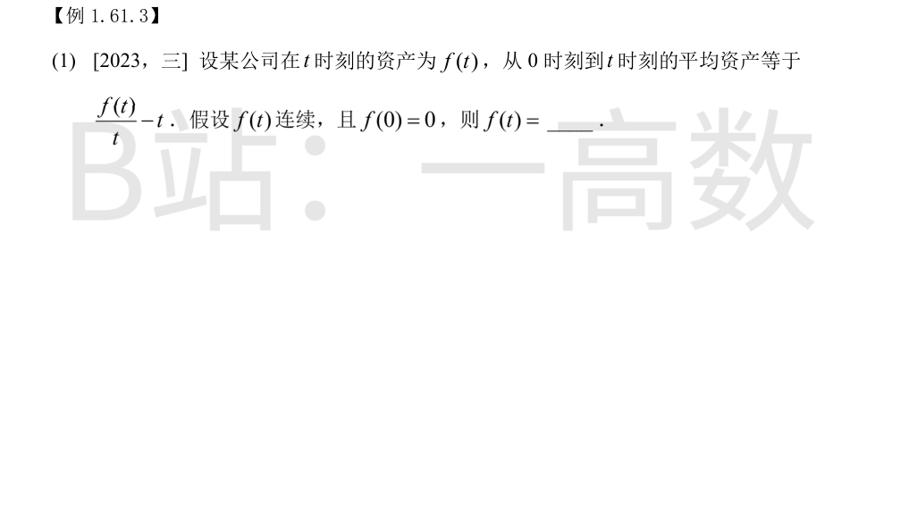
0 到 t 的平均资产为 \dfrac1t\displaystyle\int_0^t f(s)\,ds，由条件
$$\frac{1}{t}\int_0^t f(s)\,ds=\frac{f(t)}{t}-t \Rightarrow \int_0^t f(s)\,ds=f(t)-t^2.$$
由 f 连续知左端可导，两边对 t 求导：
$$f(t)=f'(t)-2t,\quad\text{即}\quad f'(t)-f(t)=2t.$$
解一阶线性方程：齐次通解 Ce^t；设特解 f^*=at+b，则 a-(at+b)=2t，得 a=-2，b=-2。
$$f(t)=Ce^t-2t-2.$$
代入 f(0)=0：C-2=0，C=2。
故
$$f(t)=2e^t-2t-2.$$
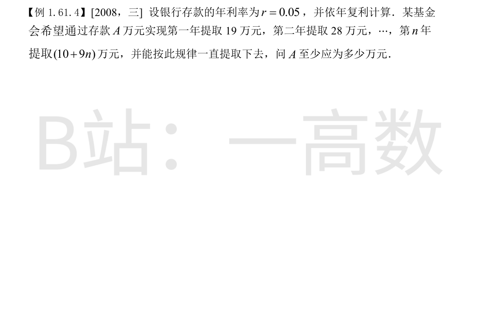
第 n 年末提取 (10+9n) 万元，其现值为 (10+9n)(1.05)^{-n}。能一直提取下去当且仅当
$$A\ge\sum_{n=1}^{\infty}(10+9n)\left(\frac{1}{1.05}\right)^n.$$
记 x=\dfrac{1}{1.05}=\dfrac{20}{21}（|x|<1），则
$$\sum_{n=1}^{\infty}x^n=\frac{x}{1-x}=\frac{20/21}{1/21}=20,$$
$$\sum_{n=1}^{\infty}nx^n=\frac{x}{(1-x)^2}=\frac{20/21}{(1/21)^2}=420.$$
故
$$A\ge 10\times20+9\times420=200+3780=3980\ (\text{万元}).$$
即 A 至少应为 3980 万元。